6. Physical modeling#
Code examples from Think Complexity, 2nd edition.
Copyright 2016 Allen Downey, MIT License
import matplotlib.pyplot as plt
import numpy as np
Show code cell content
from os.path import basename, exists
def download(url):
filename = basename(url)
if not exists(filename):
from urllib.request import urlretrieve
local, _ = urlretrieve(url, filename)
print('Downloaded ' + local)
download('https://github.com/AllenDowney/ThinkComplexity2/raw/master/notebooks/utils.py')
download('https://github.com/AllenDowney/ThinkComplexity2/raw/master/notebooks/Cell1D.py')
download('https://github.com/AllenDowney/ThinkComplexity2/raw/master/notebooks/Cell2D.py')
from utils import decorate, savefig
# make a directory for figures
!mkdir -p figs
6.1. Diffusion#
Before we get to a Reaction-Diffusion model, we’ll start with simple diffusion.
The kernel computes the difference between each cell and the sum of its neighbors.
At each time step, we compute this difference, multiply by a constant, and add it back in to the array.
from scipy.signal import correlate2d
from Cell2D import Cell2D, draw_array
class Diffusion(Cell2D):
"""Diffusion Cellular Automaton."""
kernel = np.array([[0, 1, 0],
[1,-4, 1],
[0, 1, 0]])
def __init__(self, n, r=0.1):
"""Initializes the attributes.
n: number of rows
r: diffusion rate constant
"""
self.r = r
self.array = np.zeros((n, n), float)
def add_cells(self, row, col, *strings):
"""Adds cells at the given location.
row: top row index
col: left col index
strings: list of strings of 0s and 1s
"""
for i, s in enumerate(strings):
self.array[row+i, col:col+len(s)] = np.array([int(b) for b in s])
def step(self):
"""Executes one time step."""
c = correlate2d(self.array, self.kernel, mode='same')
self.array += self.r * c
def draw(self):
"""Draws the cells."""
draw_array(self.array, cmap='Reds')
Here’s a simple example starting with an “island” of material in the middle.
diff = Diffusion(n=9, r=0.1)
diff.add_cells(3, 3, '111', '111', '111')
diff.draw()
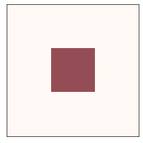
And here’s how it behaves over time: the “material” spreads out until the level is equal on the whole array.
diff.animate(frames=20, interval=0.1)
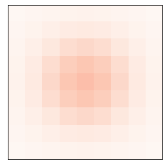
from utils import three_frame
diff = Diffusion(n=9, r=0.1)
diff.add_cells(3, 3, '111', '111', '111')
three_frame(diff, [0, 5, 10])
savefig('figs/chap07-1')
Saving figure to file figs/chap07-1
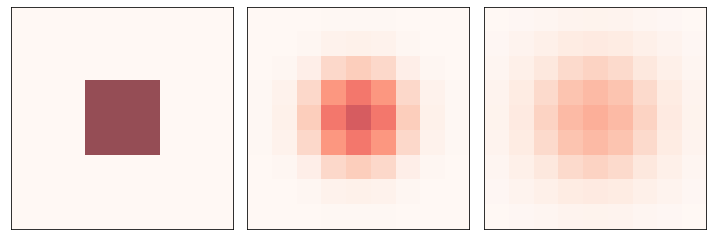
6.2. Reaction-Diffusion#
Now we’ll add a second material and let them interact.
The following function helps with setting up the initial conditions.
def add_island(a, height=0.1):
"""Adds an island in the middle of the array.
height: height of the island
"""
n, m = a.shape
radius = min(n, m) // 20
i = n//2
j = m//2
a[i-radius:i+radius, j-radius:j+radius] += height
For the RD model, we have two arrays, one for each chemical.
Following Sims, I’m using a kernel that includes the diagonal elements. They have lower weights because they are farther from the center cell.
The step function computes these functions:
\(\Delta A = r_a \nabla^2 A - AB^2 + f (1-A) \)
\(\Delta B = r_b \nabla^2 B + AB^2 - (k+f) B \)
where \(\nabla^2\) is the Laplace operator the kernel is intended to approximate.
class ReactionDiffusion(Diffusion):
"""Reaction-Diffusion Cellular Automaton."""
kernel = np.array([[.05, .2, .05],
[ .2, -1, .2],
[.05, .2, .05]])
def __init__(self, n, params, noise=0.1):
"""Initializes the attributes.
n: number of rows
params: tuple of (Da, Db, f, k)
"""
self.params = params
self.array1 = np.ones((n, n), dtype=float)
self.array2 = noise * np.random.random((n, n))
add_island(self.array2)
def step(self):
"""Executes one time step."""
A = self.array1
B = self.array2
ra, rb, f, k = self.params
options = dict(mode='same', boundary='wrap')
cA = correlate2d(A, self.kernel, **options)
cB = correlate2d(B, self.kernel, **options)
reaction = A * B**2
self.array1 += ra * cA - reaction + f * (1-A)
self.array2 += rb * cB + reaction - (f+k) * B
def loop100(self):
self.loop(100)
def draw(self):
"""Draws the cells."""
options = dict(interpolation='bicubic',
vmin=None, vmax=None)
draw_array(self.array1, cmap='Reds', **options)
draw_array(self.array2, cmap='Blues', **options)
The viewer for the CA shows both arrays with some transparency, so we can see where one, the other, or both, levels are high.
Unlike previous CAs, the state of each cell is meant to represent a continuous quantity, so it is appropriate to interpolate.
Note that draw has to make copies of the arrays because step updates the arrays in place.
Here’s an example using params3, which yields blue dots that seem to undergo mitosis.
params1 = 0.5, 0.25, 0.035, 0.057 # pink spots and stripes
params2 = 0.5, 0.25, 0.055, 0.062 # coral
params3 = 0.5, 0.25, 0.039, 0.065 # blue spots
rd = ReactionDiffusion(n=100, params=params1)
rd.draw()
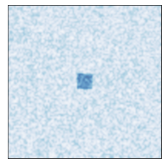
Here’s a random starting condition with lots of A, a sprinkling of B everywhere, and an island of B in the middle.
rd.animate(frames=50, step=rd.loop100)
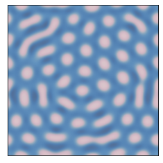
I’ll use the following function to generate figures using different parameters.
def make_rd(f, k, n=100):
"""Makes a ReactionDiffusion object with given parameters.
"""
params = 0.5, 0.25, f, k
rd = ReactionDiffusion(n, params)
return rd
The following parameters yield pink stripes and spots on a blue background:
from utils import three_frame
def plot_rd(f, k, filename):
"""Makes a ReactionDiffusion object with given parameters.
"""
params = 0.5, 0.25, f, k
rd = ReactionDiffusion(100, params)
three_frame(rd, [1000, 2000, 4000])
savefig(filename)
plot_rd(0.035, 0.057, 'figs/chap07-2')
Saving figure to file figs/chap07-2
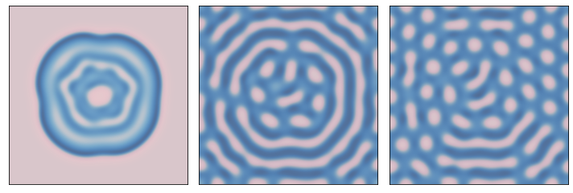
The following parameters yield blue stripes on a pink background.
plot_rd(0.055, 0.062, 'figs/chap07-3')
Saving figure to file figs/chap07-3
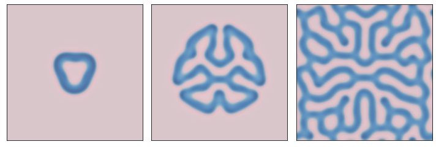
The following parameters yield blue dots on a pink background
plot_rd(0.039, 0.065, 'figs/chap07-4')
Saving figure to file figs/chap07-4
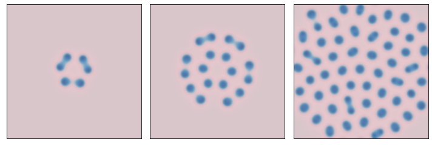
6.3. Percolation#
In the percolation model, each cell is porous with probability p. We start with a row of wet cells at the top. During each time step, a cell becomes wet if it is porous and at least one neighbor is wet (using a 4-cell neighborhood). For each value of p we compute the probability that water reaches the bottom row.
Porous cells have state 1 and wet cells have state 5, so if a cell has a wet neighbor, the sum of the neighbors will be 5 or more.
from scipy.signal import correlate2d
from Cell2D import Cell2D
class Percolation(Cell2D):
"""Percolation Cellular Automaton."""
kernel = np.array([[0, 1, 0],
[1, 0, 1],
[0, 1, 0]])
def __init__(self, n, q=0.5):
"""Initializes the attributes.
n: number of rows
q: probability of porousness
"""
self.q = q
self.array = np.random.choice([1, 0], (n, n), p=[q, 1-q])
# fill the top row with wet cells
self.array[0] = 5
def step(self):
"""Executes one time step."""
a = self.array
c = correlate2d(a, self.kernel, mode='same')
self.array[(a==1) & (c>=5)] = 5
def num_wet(self):
"""Total number of wet cells."""
return np.sum(self.array == 5)
def bottom_row_wet(self):
"""Number of wet cells in the bottom row."""
return np.sum(self.array[-1] == 5)
def draw(self):
"""Draws the cells."""
draw_array(self.array, cmap='Blues', vmax=5)
Here an example that shows the first three time steps.
n = 10
q = 0.7
np.random.seed(18)
perc = Percolation(n, q)
three_frame(perc, [1, 1, 1])
savefig('figs/chap07-5')
Saving figure to file figs/chap07-5
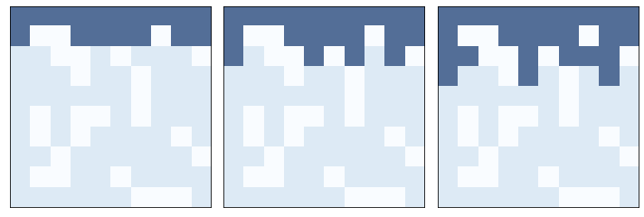
test_perc runs a percolation model and returns True if water reaches the bottom row and False otherwise.
def test_perc(perc):
"""Run a percolation model.
Runs until water gets to the bottom row or nothing changes.
returns: boolean, whether there's a percolating cluster
"""
num_wet = perc.num_wet()
while True:
perc.step()
if perc.bottom_row_wet():
return True
new_num_wet = perc.num_wet()
if new_num_wet == num_wet:
return False
num_wet = new_num_wet
Run a small example.
np.random.seed(18)
perc = Percolation(n, q)
test_perc(perc)
True
And here’s the animation
np.random.seed(18)
perc = Percolation(n, q)
perc.animate(frames=12, interval=0.3)
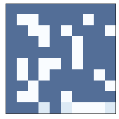
For a given q we can estimate the probability of a percolating cluster by running several random configurations.
def estimate_prob_percolating(n=100, q=0.5, iters=100):
"""Estimates the probability of percolating.
n: int number of rows and columns
q: probability that a cell is permeable
iters: number of arrays to test
returns: float probability
"""
t = [test_perc(Percolation(n, q)) for i in range(iters)]
return np.mean(t)
At q=0.55 the probability is low.
fraction = estimate_prob_percolating(q=0.55)
print(fraction)
0.0
At q=0.6, the probability is close to 50%, which suggests that the critical value is nearby.
fraction = estimate_prob_percolating(q=0.6)
print(fraction)
0.71
At p=0.65 the probability is high.
fraction = estimate_prob_percolating(q=0.65)
print(fraction)
1.0
We can search for the critical value by random walk: if there’s a percolating cluster, we decrease q; otherwise we increase it.
The path should go to the critical point and wander around it.
def find_critical(n=100, q=0.6, iters=100):
"""Estimate q_crit by random walk.
returns: list of q that should wander around q_crit
"""
qs = [q]
for i in range(iters):
perc = Percolation(n, q)
if test_perc(perc):
q -= 0.005
else:
q += 0.005
qs.append(q)
return qs
Let’s see whether the critical value depends on the size of the grid.
With n=50, the random walk wanders around 0.59.
%time qs = find_critical(n=50, iters=1000)
plt.plot(qs)
decorate(xlabel='Time steps', ylabel='Estimated q_crit')
np.mean(qs)
CPU times: user 6.65 s, sys: 0 ns, total: 6.65 s
Wall time: 6.65 s
0.5932367632367631
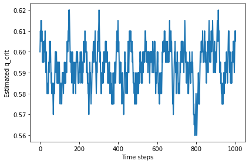
Larger values of n don’t seem to change the critical value.
%time qs = find_critical(n=100, iters=200)
plt.plot(qs)
decorate(xlabel='Time steps', ylabel='Estimated q_crit')
np.mean(qs)
CPU times: user 9.92 s, sys: 0 ns, total: 9.92 s
Wall time: 9.92 s
0.5933830845771144
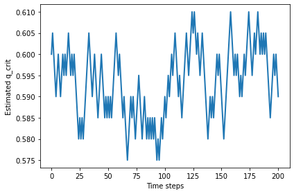
%time qs = find_critical(n=200, iters=40)
plt.plot(qs)
decorate(xlabel='Time steps', ylabel='Estimated q_crit')
np.mean(qs)
CPU times: user 15.9 s, sys: 3.84 ms, total: 15.9 s
Wall time: 15.9 s
0.5912195121951219
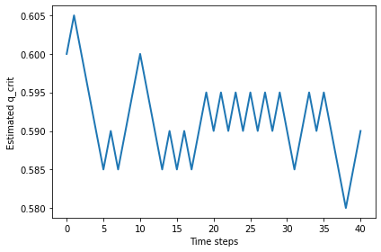
%time qs = find_critical(n=400, iters=10)
plt.plot(qs)
decorate(xlabel='Time steps', ylabel='Estimated q_crit')
np.mean(qs)
CPU times: user 34.3 s, sys: 11.8 ms, total: 34.3 s
Wall time: 34.3 s
0.5968181818181817
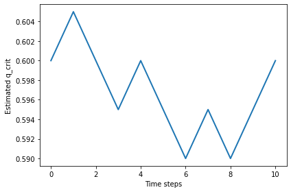
6.4. Fractals#
Near the critical point, the cluster of wet cells forms a fractal. We can see that visually in these examples:
np.random.seed(22)
perc1 = Percolation(n=100, q=0.6)
flag = test_perc(perc1)
print(flag)
perc1.draw()
False
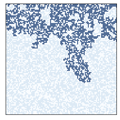
np.random.seed(22)
perc2 = Percolation(n=200, q=0.6)
flag = test_perc(perc2)
print(flag)
perc2.draw()
False
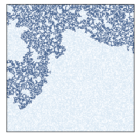
np.random.seed(22)
perc3 = Percolation(n=300, q=0.6)
flag = test_perc(perc3)
print(flag)
perc3.draw()
True
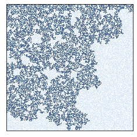
plt.figure(figsize=(10, 4))
plt.subplot(1, 3, 1)
perc1.draw()
plt.subplot(1, 3, 2)
perc2.draw()
plt.subplot(1, 3, 3)
perc3.draw()
plt.tight_layout()
savefig('figs/chap07-6')
Saving figure to file figs/chap07-6
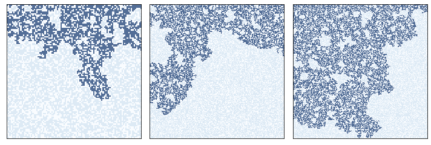
To measure fractal dimension, let’s start with 1D CAs.
from Cell1D import Cell1D, draw_ca
Here’s one rule that seems clearly 1D, one that is clearly 2D, and one that we can’t obviously classify.
draw_ca(20)
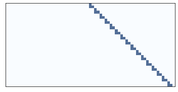
plt.figure(figsize=(10, 4))
plt.subplot(1, 3, 1)
draw_ca(20)
plt.subplot(1, 3, 2)
draw_ca(50)
plt.subplot(1, 3, 3)
draw_ca(18)
plt.tight_layout()
savefig('figs/chap07-7')
Saving figure to file figs/chap07-7
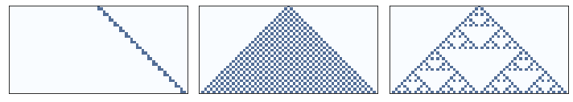
The following function creates a 1D CA and steps through time, counting the number of on cells after each time step.
def count_cells(rule, n=500):
"""Create a 1-D CA and count cells.
rule: int rule number
n: number of steps
"""
ca = Cell1D(rule, n)
ca.start_single()
res = []
for i in range(1, n):
cells = np.sum(ca.array)
res.append((i, i**2, cells))
ca.step()
return res
This function plots the results, comparing the rate of cell growth to size and size**2.
And it uses linregress to estimate the slope of the line on a log-log scale.
from scipy.stats import linregress
def test_fractal(rule, ylabel='Number of Cells'):
"""Compute the fractal dimension of a rule.
rule: int rule number
ylabel: string
"""
res = count_cells(rule)
steps, steps2, cells = zip(*res)
options = dict(linestyle='dashed', color='gray', alpha=0.7)
plt.plot(steps, steps2, label='d=2', **options)
plt.plot(steps, cells, label='rule=%d' % rule)
plt.plot(steps, steps, label='d=1', **options)
decorate(xscale='log', yscale='log',
xlabel='Time Steps',
ylabel=ylabel,
xlim=[1, 600], loc='upper left')
params = linregress(np.log(steps), np.log(cells))
print(params[0])
The linear rule has dimension close to 1.
test_fractal(20)
1.0128557089014958
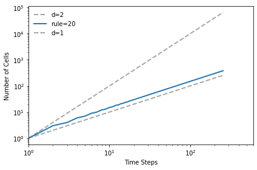
The triangular rule has dimension close to 2.
test_fractal(50)
1.9712808836268108
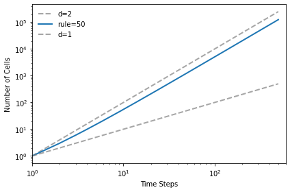
And the Sierpinski triangle has fractal dimension approximately 1.57
test_fractal(18)
1.5739294411777087
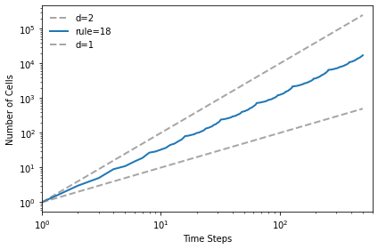
plt.figure(figsize=(10, 4))
plt.subplot(1, 3, 1)
test_fractal(20)
plt.subplot(1, 3, 2)
test_fractal(50, ylabel='')
plt.subplot(1, 3, 3)
test_fractal(18, ylabel='')
savefig('figs/chap07-8')
1.0079212645952562
1.9712808836268108
1.5739294411777087
Saving figure to file figs/chap07-8
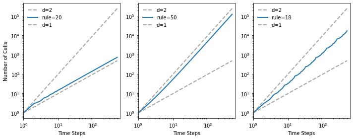
Mathematically, the fractal dimension is supposed to be:
np.log(3) / np.log(2)
1.5849625007211563
6.5. Fractals in percolation models#
We can measure the fractal dimension of a percolation model by measuring how the number of wet cells scales as we increase the size of a bounding box.
The following function takes a sequence of sizes and the proportion of porous cells, q.
It run the percolation model with each of the sizes and checks whether it percolates from top to bottom. If so, it counts the number of wet cells (subtracting off the top row, which started out wet).
from scipy.stats import linregress
def run_perc_scaling(sizes, q):
res = []
for size in sizes:
perc = Percolation(size, q)
if test_perc(perc):
num_filled = perc.num_wet() - size
res.append((size, size**2, num_filled))
return np.transpose(res)
The result is an array with three rows, which we can assign to variables.
sizes = np.arange(10, 101)
q = 0.59
sizes, cells, filled = run_perc_scaling(sizes, q)
The following function plots the results.
def plot_perc_scaling(sizes, cells, filled):
options = dict(linestyle='dashed', color='gray', alpha=0.7)
plt.plot(sizes, cells, label='d=2', **options)
plt.plot(sizes, filled, '.', label='filled')
plt.plot(sizes, sizes, label='d=1', **options)
decorate(xlabel='Array Size',
ylabel='Cell Count',
xscale='log', xlim=[9, 110],
yscale='log', ylim=[9, 20000],
loc='upper left')
params = linregress(np.log(sizes), np.log(filled))
print(params[0])
If we plot the number of cells versus the size of the box on a log-log scale, the slope is the fractal dimension.
When q is near the critical point, the fractal dimension of the wet cells is usually between 1.8 and 2.0, but it varies from one run to the next.
plot_perc_scaling(sizes, cells, filled)
savefig('figs/chap07-9')
1.8899444160281826
Saving figure to file figs/chap07-9
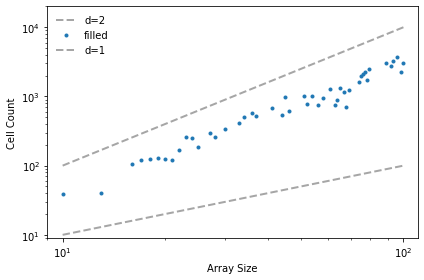
Exercise: In Chapter 7 we showed that the Rule 18 CA produces a fractal. Can you find other rules that produce fractals? For each one, estimate its fractal dimension.
Note: the Cell1D object in Cell1D.py does not wrap around from the left edge to the right, which creates some artifacts at the boundaries. You might want to use Wrap1D, which is a child class of Cell1D that wraps around.
class Wrap1D(Cell1D):
"""Implements a 1D cellular automaton with wrapping."""
def step(self):
# perform the usual step operation
Cell1D.step(self)
# fix the first and last cells by copying from the other end
i = self.next-1
row = self.array[i]
row[0], row[-1] = row[-2], row[1]
Here’s a modified version of count_cells that uses Wrap1D
def count_cells(rule, n=256):
"""Make a CA and count cells.
rule: int rule number
n: number of steps
"""
ca = Wrap1D(rule, n)
ca.start_single()
res = []
for i in range(1, n):
cells = np.sum(ca.array)
res.append((i, i**2, cells))
ca.step()
return res
And here’s a simplified version of test_fractal:
def test_fractal(rule):
res = count_cells(rule)
steps, steps2, cells = np.transpose(res)
params = linregress(np.log(steps), np.log(cells))
return params[0]
Exercise: In 1990 Bak, Chen and Tang proposed a cellular automaton that is an abstract model of a forest fire. Each cell is in one of three states: empty, occupied by a tree, or on fire.
The rules of the CA are:
An empty cell becomes occupied with probability \(p\).
A cell with a tree burns if any of its neighbors is on fire.
A cell with a tree spontaneously burns, with probability \(f\), even if none of its neighbors is on fire.
A cell with a burning tree becomes an empty cell in the next time step.
Write a
program that implements it. You might want to inherit from Cell2D.
Typical values for the parameters are
\(p=0.01\) and \(f=0.001\), but you might want to experiment with other
values.
Starting from a random initial condition, run the CA until it reaches a steady state where the number of trees no longer increases or decreases consistently.
In steady state, is the geometry of the forest fractal? What is its fractal dimension?
# Here's the color map I used
from matplotlib.colors import LinearSegmentedColormap
colors = [(0, 'white'),
(0.2, 'Green'),
(1.0, 'Orange')]
cmap = LinearSegmentedColormap.from_list('mycmap', colors)